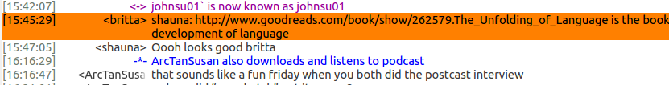
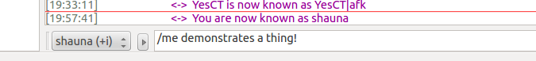

Open Source Communications Tools
3 Most Common Tools
Mailing Lists
IRC
Issue Trackers
Mailing Lists
IRC
IRC is decentralized, which means no one organization or company controls it. Instead, individuals host networks. Make sure your channel AND network are correct!


You can join a channel from the command line!
/join #openhatch
If you use someone's nickname, most clients highlight that so it's easy for them to see. It's considered good form to include the nicks of people you are addressing, although you don't need to do this for every single line.
You can start a private conversation with someone using this command:
/query nick messsage
It is considered good form to ask in the public channel whether you can send a private message to someone.
You can do actions.

You can register your nickname!
/msg NickServ REGISTER password youremail@example.com
Then, when you return to the network after being away, you can identify yourself with your registered name and password:
/msg NickServ IDENTIFY account password
If you want to be persistently logged in to IRC, you can:
use the Quassel server component
(we can help you!)
If you want to log into IRC quickly and don't have a client set up, try webchat:
Want to learn more? Try #irchelp!
Issue Trackers
Example trackers:
Common fields:
- Unique ID
- Reporter/Creator of Issue
- Assigned
- Date Created & Date Updated
- Status
- Summary
Pay attention to:
- Status
- Bad: "Closed", "Resolved" or "Upstream"
- Mediocre: "New"
- Good: "Open" or "Accepted"
- Assigned
- Date Updated